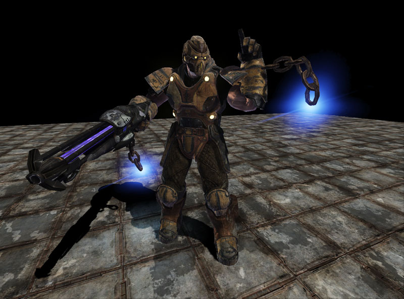
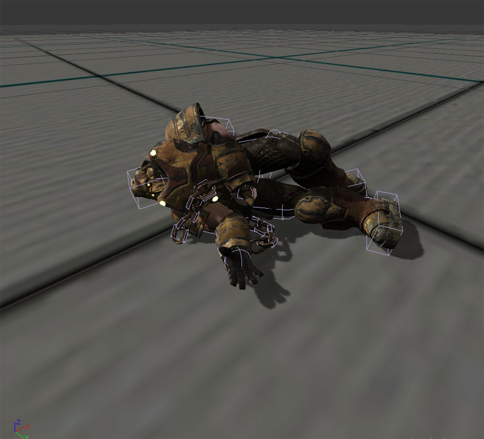
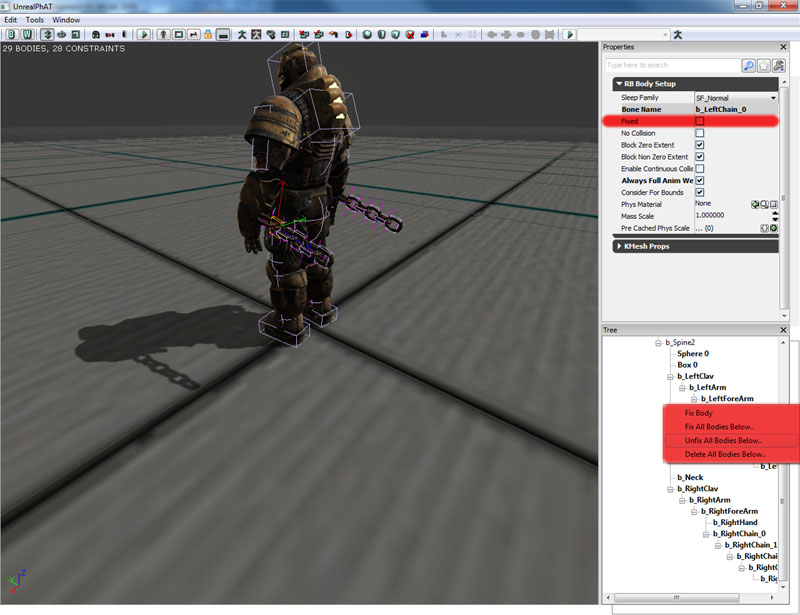
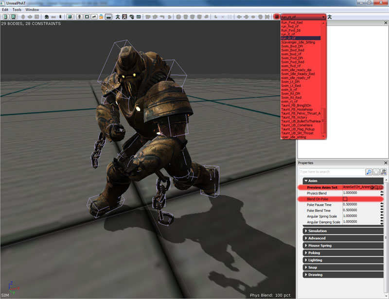
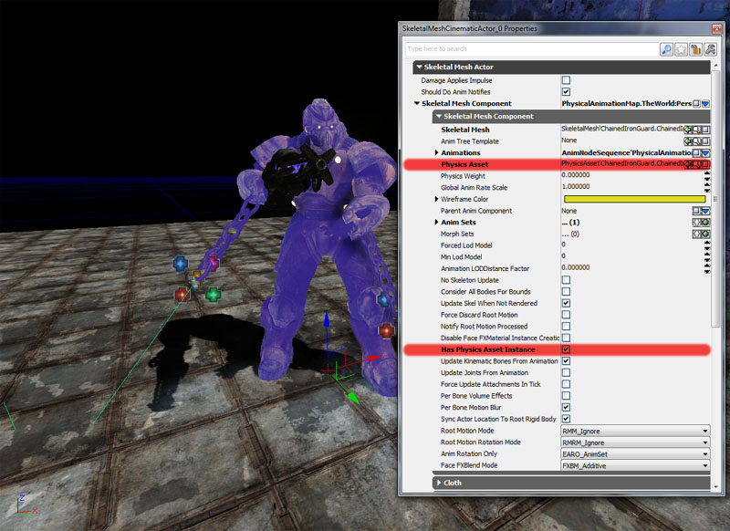
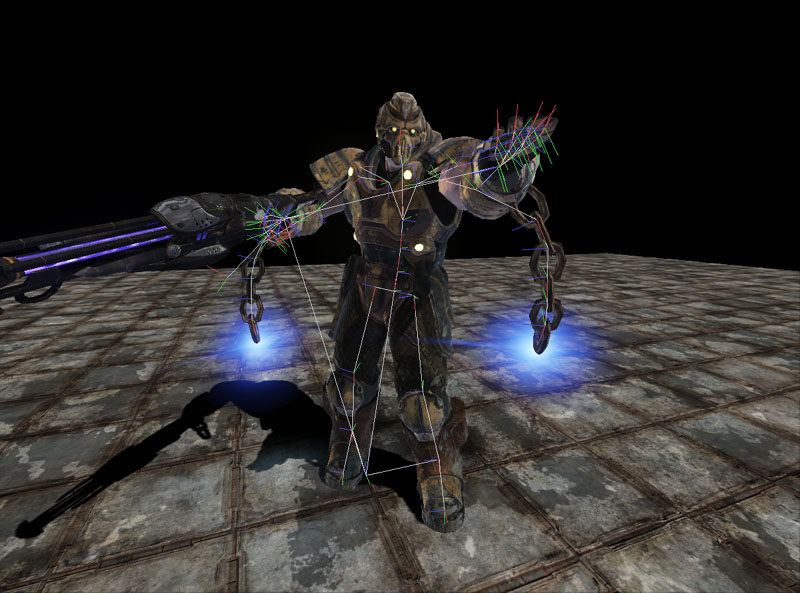
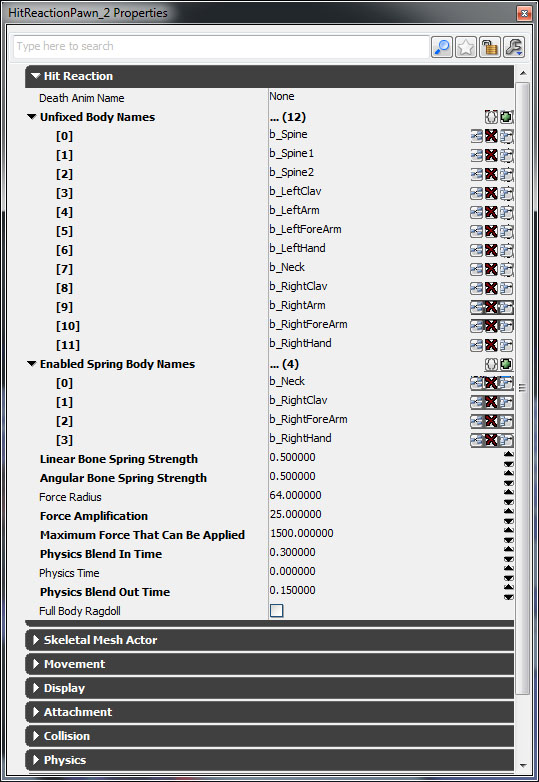
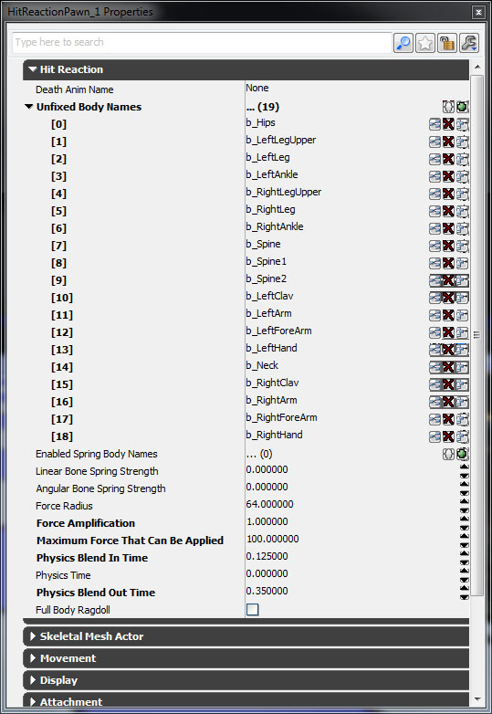
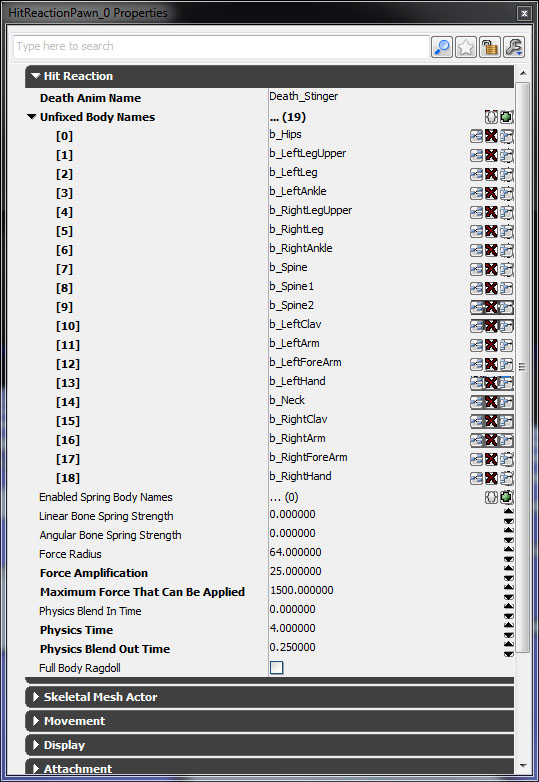
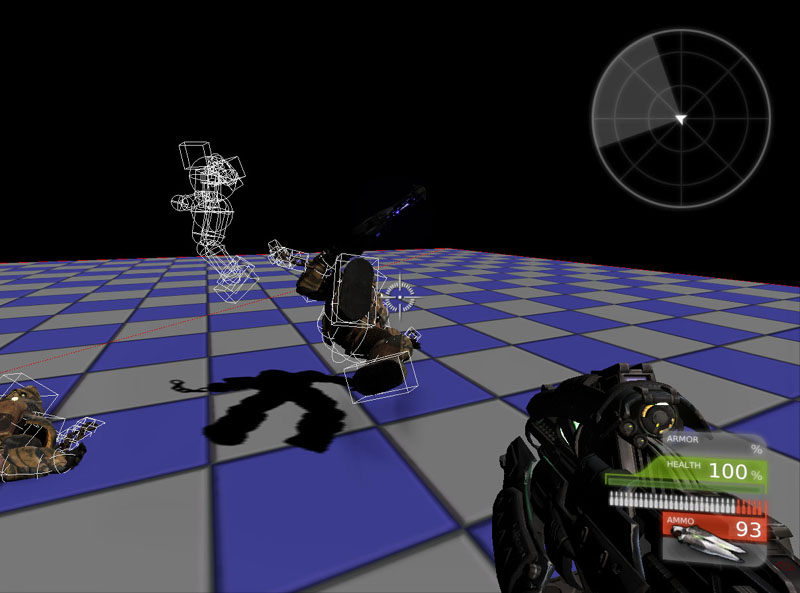

UDN
Search public documentation:
PhysicalAnimationJP
English Translation
中国翻译
한국어
Interested in the Unreal Engine?
Visit the Unreal Technology site.
Looking for jobs and company info?
Check out the Epic games site.
Questions about support via UDN?
Contact the UDN Staff
中国翻译
한국어
Interested in the Unreal Engine?
Visit the Unreal Technology site.
Looking for jobs and company info?
Check out the Epic games site.
Questions about support via UDN?
Contact the UDN Staff
UE3 ホーム > 物理 > 物理アニメーション
UE3 ホーム > アニメーション > 物理アニメーション
UE3 ホーム > アニメーター > 物理アニメーション
UE3 ホーム > 骨格メッシュ > 物理アニメーション
UE3 ホーム > アニメーション > 物理アニメーション
UE3 ホーム > アニメーター > 物理アニメーション
UE3 ホーム > 骨格メッシュ > 物理アニメーション
物理アニメーション
概要
望ましいアニメーションを得るために、物理シミュレーションをアタッチメント上で実行しなければならない場合がかなりあります。たとえば、囚人がつながれているガチャガチャ鳴る鎖や、意識を失って倒れ込むラグドールなどがあげられます。キャラクターは動き、さまざまなアニメーションをブレンドするため、ものの位置を予め定めることは不可能です。「Unreal Engine 3」ではこの問題を解決するために、アニメーターとプログラマーが、骨格メッシュ内のボーンの一部または全部を、物理シミュレーションされる剛体アタッチメントとして定めることができるようになっています。 腕がチェーンにつながれているキャラクターです。チェーンは物理によって制御されています。体の他の部分は、ブレンドされたアニメーションとインバース キネマティックスによって制御されています。

体全体をシミュレートするために物理が使用されているキャラクターです。
パイプライン
物理アニメーション システムは、「Unreal Engine 3」のアニメーション パイプラインの一部です。まず、Anim Tree によってブレンドが行われる際に、通常のアニメーションが処理されます。次に、Anim Tree によってインバース キネマティックスの制御が適用されます。最後に、Physics Asset (物理アセット) によって物理が骨格に適用されます。その際、物理サブシステムが残りの物理を処理するとともに、グラフィックス サブシステムがシーンをレンダリングします。 骨格のための物理は、ボーンが固定されているか否かに基づいて計算されます。固定されているボーンは、決して物理によってシミュレートされません。ブレンドされたアニメーションとインバース キネマティックス システムによって制御されます。固定されていないボーンが物理によってシミュレートされます。

ワークフロー
プログラマーとアニメーターが共同で作業を行うことによって、必要な物理アニメーション コンテンツを作成します。アニメーターは、物理アセットをセットアップします。これには、ボディをロックすることや、システムをシミュレートしてすべてが連結していることを確かめることが含まれています。そして、プログラマーの責任は、ゲームプレイに応じて物理アニメーションを有効 / 無効にすることです。
物理の制御
物理のタイプ
物理のタイプは 2 つあります。- キネマティックス (Kinematic) (「固定」 fixed)
- 指定したとおりのところに進みます。
- コリジョンを無視します。
- ぶつかったオブジェクトを非常に強く押します。
- 動的 (Dynamic) (「非固定」 unfixed)
- コリジョンに対してリアルに反応をします。
- 制御するには、力と制約を使用する必要があります。
物理オブジェクト
物理オブジェクトには 3 種類あります。- 力 (Force)
- 一定の力 (重力や風など) を加えるために使用されます。
- 衝撃 (Impulse)
- 瞬間的な力 (爆発やガンショットなど) を加えるために使用されます。
- 制約 (Constraint)
- 継続的な力 (ジョイントやスプリング) を加えるために使用されます。
骨格メッシュ上の部分的な物理シミュレーション
最近のゲームに共通しているエフェクトとして、キャラクターのある部分には物理シミュレーションを実行させ、残りの部分にはブレンドされたアニメーションとインバース キネマティックスを使用してアニメートさせるということがあります。これを最も簡単にセットアップするには、キャラクターの骨格メッシュにすべてのボーンが含まれるようにします。これには、物理的にシミュレートされる部分も含まれます。次は、鎖につながれたキャラクターのために使用されている骨格です。
 したがってまた、PhAT ツールを使用して、骨格のための PhysicsAsset (物理アセット) を作成しなければならないことになります。これには、物理シミュレーションを実行させるボーンも含まれます。これらの物理部分がどのように見えるかを PhAT で確認することができます。それには、それらのボディ以外のすべてを fixing (固定) します。(これは、ツリー内で右クリックして Unfix All Bodies Below.. (以下の全ボディの固定を解除する) または Fix All Bodies Below.. (以下の全ボディを固定する) を選択します。また、個々の剛体の固定したステータスをセットするには、ボーンをクリックするか Fixed (固定) プロパティにチェックを入れるか外すかします。
したがってまた、PhAT ツールを使用して、骨格のための PhysicsAsset (物理アセット) を作成しなければならないことになります。これには、物理シミュレーションを実行させるボーンも含まれます。これらの物理部分がどのように見えるかを PhAT で確認することができます。それには、それらのボディ以外のすべてを fixing (固定) します。(これは、ツリー内で右クリックして Unfix All Bodies Below.. (以下の全ボディの固定を解除する) または Fix All Bodies Below.. (以下の全ボディを固定する) を選択します。また、個々の剛体の固定したステータスをセットするには、ボーンをクリックするか Fixed (固定) プロパティにチェックを入れるか外すかします。

ツール内でシミュレーションを行っている間、 Preview Anim Set (アニメセットのプレビュー) オプション内で AnimSet を割り当てることができます。さらに、アニメーション (走りサイクルなど) をツールバー上のドロップダウンから選択してループさせることができます。再生ボタンを押すと、アニメーションがループし、停止ボタンを押すとアニメーションが停止します。シミュレーションを停止させることなく即座にアニメーションを変更することができます。また、 Blend On Poke (ポークでブレンド) プロパティにチェックを入れると、左マウスボタンを使用して骨格メッシュをポークして (つついて)、部分的な物理シミュレーションとフルの物理シミュレーションの間でブレンドできるようになります。
必ず、 PhysicsAsset (物理アセット) をゲーム内のキャラクターに割り当て、 bHasPhysicsAssetInstance (物理アセット インスタンスをもつ) を true にセットします。
これで、ゲームを実行して、コンソール内で nxvis collision (nxvis コリジョン) とタイプすると、キャラクターの物理オブジェクトのために白い外形が表示されます。ただし、今すぐ物理的なシミュレートが行われるわけではありません。 考慮しなければならないことは、これらのボーンのための物理をどのようにしてキャラクターのアニメーションにブレンドするかという問題です。通常は、骨格メッシュコンポーネント上の PhysicsWeight (物理ウェイト) パラメータを使用して、物理エンジンの出力とアニメーションシステムの出力の間におけるブレンド量を選択します。この例では、 PhysicsWeight がゼロの場合であっても、これら特定のボーンがつねに物理エンジンの出力を使用するようにする必要があります。そのために、物理アセット内の各剛体上にある bAlwaysFullAnimWeight (つねにフル アニメーション ウェイト) というパラメータがあります。これらボーンのすべてについて、このパラメータを true にセットします。また、骨格メッシュコンポーネント上で bEnableFullAnimWeightBodies (フルアニメーション ウェイト ボディを有効にする) を true にセットします。
考慮しなければならないことは、これらのボーンのための物理をどのようにしてキャラクターのアニメーションにブレンドするかという問題です。通常は、骨格メッシュコンポーネント上の PhysicsWeight (物理ウェイト) パラメータを使用して、物理エンジンの出力とアニメーションシステムの出力の間におけるブレンド量を選択します。この例では、 PhysicsWeight がゼロの場合であっても、これら特定のボーンがつねに物理エンジンの出力を使用するようにする必要があります。そのために、物理アセット内の各剛体上にある bAlwaysFullAnimWeight (つねにフル アニメーション ウェイト) というパラメータがあります。これらボーンのすべてについて、このパラメータを true にセットします。また、骨格メッシュコンポーネント上で bEnableFullAnimWeightBodies (フルアニメーション ウェイト ボディを有効にする) を true にセットします。
 アクタの物理が PHYS_RigidBody (物理_剛体) である場合、剛体のデフォルトは、物理アセットで定義されている fixed (固定) の状態となります。しかし、走り回るキャラクターは通常 PHYS_Walking (物理_歩く) または PHYS_Falling (物理_転倒) などであり、すべての剛体のデフォルトは fixed (固定) となります。これは、物理アセットの定義に左右されません。これらの剛体上で物理にシミュレートさせるには、コード内で明示的に unfix (固定解除) する必要があります。PhysicsAssetInstance (物理アセット インスタンス) 内にある、 SetFullAnimWeightBonesFixed (フルアニメーション重みボーン固定の設定) という関数が役立ちます。SkeletalMeshActor (骨格メッシュアクタ) には、PostBeginPlay (プレイ開始後) の内部にフラグが立てられた剛体の固定を解除する例があります。
アクタの物理が PHYS_RigidBody (物理_剛体) である場合、剛体のデフォルトは、物理アセットで定義されている fixed (固定) の状態となります。しかし、走り回るキャラクターは通常 PHYS_Walking (物理_歩く) または PHYS_Falling (物理_転倒) などであり、すべての剛体のデフォルトは fixed (固定) となります。これは、物理アセットの定義に左右されません。これらの剛体上で物理にシミュレートさせるには、コード内で明示的に unfix (固定解除) する必要があります。PhysicsAssetInstance (物理アセット インスタンス) 内にある、 SetFullAnimWeightBonesFixed (フルアニメーション重みボーン固定の設定) という関数が役立ちます。SkeletalMeshActor (骨格メッシュアクタ) には、PostBeginPlay (プレイ開始後) の内部にフラグが立てられた剛体の固定を解除する例があります。
simulated event PostBeginPlay()
{
// grab the current mesh for replication
if (Role == ROLE_Authority && SkeletalMeshComponent != None)
{
ReplicatedMesh = SkeletalMeshComponent.SkeletalMesh;
}
// Unfix bodies flagged as 'full anim weight'
if (SkeletalMeshComponent != None &&
//SkeletalMeshComponent.bEnableFullAnimWeightBodies &&
SkeletalMeshComponent.PhysicsAssetInstance != None)
{
SkeletalMeshComponent.PhysicsAssetInstance.SetFullAnimWeightBonesFixed(FALSE, SkeletalMeshComponent);
}
if(bHidden)
{
SkeletalMeshComponent.SetClothFrozen(TRUE);
}
}

骨格メッシュ上のフルの物理シミュレーション
- bHasPhysicsAssetInstance (物理アセットインスタンスをもつ) を true にセットする必要があります。これによって、物理サブシステムが、当該の骨格メッシュのために物理アセットをインスタンス化します。骨格メッシュ上におけるボーン毎のラインチェックのためには必要ではありません。
- 骨格メッシュを所有しているアクタは、物理モードが PHYS_RigidBody (物理_剛体) にセットされる必要がありません。これによって、アクタの位置および回転が、ルートボディの位置および回転と一致するようになります。
- RB_BodyInstance (RB_ボディ インスタンス) 内で定義されている SetFixed(false) を呼び出すことによって、動的にすべき剛体インスタンスの固定を解除します。
- これらボディのために物理がブレンドされるようにします。
- 骨格メッシュ コンポーネントにおいて PhysicsWeight (物理ウエイト) を 0 より大きい値にセットします。
- 骨格メッシュ コンポーネントにおいて bEnableFullAnimWeightBodies (フルアニメーション重みボディの有効化) を true にセットします。
- RB_BodySetup において bAlwaysFullAnimWeight (つねにフルのアニメーション重み) を true にセットします。
simulated function bool Died(Controller Killer, class<DamageType> DamageType, vector HitLocation)
{
if (Super.Died(Killer, DamageType, HitLocation))
{
Mesh.MinDistFactorForKinematicUpdate = 0.f;
Mesh.SetRBChannel(RBCC_Pawn);
Mesh.SetRBCollidesWithChannel(RBCC_Default, true);
Mesh.SetRBCollidesWithChannel(RBCC_Pawn, false);
Mesh.SetRBCollidesWithChannel(RBCC_Vehicle, false);
Mesh.SetRBCollidesWithChannel(RBCC_Untitled3, false);
Mesh.SetRBCollidesWithChannel(RBCC_BlockingVolume, true);
Mesh.ForceSkelUpdate();
Mesh.SetTickGroup(TG_PostAsyncWork);
CollisionComponent = Mesh;
CylinderComponent.SetActorCollision(false, false);
Mesh.SetActorCollision(true, false);
Mesh.SetTraceBlocking(true, true);
SetPhysics(PHYS_RigidBody);
Mesh.PhysicsWeight = 1.0;
if (Mesh.bNotUpdatingKinematicDueToDistance)
{
Mesh.UpdateRBBonesFromSpaceBases(true, true);
}
Mesh.PhysicsAssetInstance.SetAllBodiesFixed(false);
Mesh.bUpdateKinematicBonesFromAnimation = false;
Mesh.SetRBLinearVelocity(Velocity, false);
Mesh.ScriptRigidBodyCollisionThreshold = MaxFallSpeed;
Mesh.SetNotifyRigidBodyCollision(true);
Mesh.WakeRigidBody();
return true;
}
return false;
}
「Unreal」エディタ
- SkeletalMeshActor (骨格メッシュ アクタ) とその子は、物理を使用して骨格メッシュでボーンをシミュレートすることができます。
- KAsset とその子をレベルに配置して、骨格メッシュ上でフルの物理シミュレーションを実行することができます。
便利なコンソール コマンド
- nxvis collision - 物理シミュレーションに使用されるコリジョン ボディを示します。 show collision よりもこちらを使用してください。理由は、 show collision が、「Unreal」の物理サブシステムのために使用されるコリジョン包しか示さないからです。

- show bones - アニメートされる骨格メッシュをレンダリングするために使用されるボーンの位置と回転を示します。

- show prephysbones - ブレンドされたアニメーションとインバース キネマティックスが適用された後に (ただし、物理が適用される前に) 、ボーンの位置と回転を示します。チェーンのボーンが真っ直ぐ突き出ている様子に注目してください。これは、事前に定められたアニメーションがこれらのボーンのために作られていないために起こります。ただし、物理が適用された後では、チェーンが適切な位置に置かれます。

例
以下にあげるすべてのサンプルには、汎用のアクタが作成されました。各サンプルでは、UnrealScript のロジックがリストされています。
Unrealscript
class HitReactionPawn extends SkeletalMeshCinematicActor;
// Death animation
var(HitReaction) Name DeathAnimName;
// Bone names to unfix when hit reaction is simulated
var(HitReaction) array<Name> UnfixedBodyNames;
// Bone names to enable springs when hit reaction is simulated
var(HitReaction) array<Name> EnabledSpringBodyNames;
// Linear bone spring strength to use when hit reaction is simulated
var(HitReaction) float LinearBoneSpringStrength;
// Angular bone spring strength to use when hit reaction is simulated
var(HitReaction) float AngularBoneSpringStrength;
// Radius of the force to apply
var(HitReaction) float ForceRadius;
// Force amplification
var(HitReaction) float ForceAmplification;
// Maximum amount of force that can be applied
var(HitReaction) float MaximumForceThatCanBeApplied;
// Blend in time for the hit reaction
var(HitReaction) float PhysicsBlendInTime;
// Physics simulation time for the hit reaction
var(HitReaction) float PhysicsTime;
// Blend out time for the hit reaction
var(HitReaction) float PhysicsBlendOutTime;
// Full body rag doll
var(HitReaction) bool FullBodyRagdoll;
var Name PreviousAnimName;
event TakeDamage(int DamageAmount, Controller EventInstigator, vector HitLocation, vector Momentum, class<DamageType> DamageType, optional TraceHitInfo HitInfo, optional Actor DamageCauser)
{
local AnimNodeSequence AnimNodeSequence;
Super.TakeDamage(DamageAmount, EventInstigator, HitLocation, Momentum, DamageType, HitInfo, DamageCauser);
if (SkeletalMeshComponent == None || SkeletalMeshComponent.PhysicsAssetInstance == None)
{
return;
}
if (IsTimerActive(NameOf(SimulatingPhysicsBlendIn)) || IsTimerActive(NameOf(SimulatingPhysics)) || IsTimerActive(NameOf(SimulatedPhysicsBlendOut)))
{
return;
}
if (FullBodyRagdoll)
{
if (DeathAnimName != '')
{
AnimNodeSequence = AnimNodeSequence(SkeletalMeshComponent.Animations);
if (AnimNodeSequence != None)
{
PreviousAnimName = AnimNodeSequence.AnimSeqName;
AnimNodeSequence.SetAnim(DeathAnimName);
AnimNodeSequence.PlayAnim();
AnimNodeSequence.bCauseActorAnimEnd = true;
return;
}
}
else
{
TurnOnRagdoll(Normal(Momentum) * FMin(DamageAmount * ForceAmplification, MaximumForceThatCanBeApplied));
}
}
else
{
if (DeathAnimName != '')
{
AnimNodeSequence = AnimNodeSequence(SkeletalMeshComponent.Animations);
if (AnimNodeSequence != None)
{
PreviousAnimName = AnimNodeSequence.AnimSeqName;
AnimNodeSequence.SetAnim(DeathAnimName);
AnimNodeSequence.PlayAnim();
AnimNodeSequence.bCauseActorAnimEnd = true;
return;
}
}
else
{
TurnOnRagdoll(Vect(0.f, 0.f, 0.f));
// Apply the impulse
SkeletalMeshComponent.AddRadialImpulse(HitLocation - (Normal(Momentum) * 16.f), ForceRadius, FMin(DamageAmount * ForceAmplification, MaximumForceThatCanBeApplied), RIF_Linear, true);
// Wake up the rigid body
SkeletalMeshComponent.WakeRigidBody();
}
}
BlendInPhysics();
}
event OnAnimEnd(AnimNodeSequence AnimNodeSequence, float PlayedTime, float ExcessTime)
{
TurnOnRagdoll(Vect(0.f, 0.f, 0.f));
BlendInPhysics();
AnimNodeSequence.bCauseActorAnimEnd = false;
}
function TurnOnRagdoll(Vector RBLinearVelocity)
{
// Force update the skeleton
SkeletalMeshComponent.ForceSkelUpdate();
// Fix the bodies that don't need to play a part in the physical hit reaction
if (UnfixedBodyNames.Length > 0)
{
SkeletalMeshComponent.PhysicsAssetInstance.SetNamedBodiesFixed(false, UnfixedBodyNames, SkeletalMeshComponent,, true);
}
else
{
SkeletalMeshComponent.PhysicsAssetInstance.SetAllBodiesFixed(false);
}
// Enable springs on bodies that are required in the physical hit reaction
if (EnabledSpringBodyNames.Length > 0)
{
SkeletalMeshComponent.PhysicsAssetInstance.SetNamedRBBoneSprings(true, EnabledSpringBodyNames, LinearBoneSpringStrength, AngularBoneSpringStrength, SkeletalMeshComponent);
}
SkeletalMeshComponent.bUpdateKinematicBonesFromAnimation = false;
SkeletalMeshComponent.SetRBLinearVelocity(RBLinearVelocity, true);
SkeletalMeshComponent.WakeRigidBody();
}
function BlendInPhysics()
{
// Set the timer for the physics to blend in
if (PhysicsBlendInTime > 0.f)
{
SetTimer(PhysicsBlendInTime, false, NameOf(SimulatingPhysicsBlendIn));
}
else
{
SkeletalMeshComponent.PhysicsWeight = 1.f;
SimulatingPhysicsBlendIn();
}
}
function SimulatingPhysicsBlendIn()
{
if (PhysicsTime == 0.f)
{
SimulatingPhysics();
}
else
{
// Set the timer for the physics to stay
SetTimer(PhysicsTime, false, NameOf(SimulatingPhysics));
}
}
function SimulatingPhysics()
{
local AnimNodeSequence AnimNodeSequence;
// Set the timer for the physics to blend out
SetTimer(PhysicsBlendOutTime, false, NameOf(SimulatedPhysicsBlendOut));
if (PreviousAnimName != '')
{
AnimNodeSequence = AnimNodeSequence(SkeletalMeshComponent.Animations);
if (AnimNodeSequence != None)
{
AnimNodeSequence.SetAnim(PreviousAnimName);
AnimNodeSequence.PlayAnim(true);
}
}
}
function SimulatedPhysicsBlendOut()
{
// Set physics weight to zero
SkeletalMeshComponent.PhysicsWeight = 0.f;
SkeletalMeshComponent.ForceSkelUpdate();
if (FullBodyRagdoll)
{
SkeletalMeshComponent.PhysicsAssetInstance.SetAllBodiesFixed(true);
SkeletalMeshComponent.bUpdateKinematicBonesFromAnimation = true;
}
else
{
SkeletalMeshComponent.bUpdateKinematicBonesFromAnimation = true;
if (UnfixedBodyNames.Length > 0)
{
SkeletalMeshComponent.PhysicsAssetInstance.SetNamedBodiesFixed(true, UnfixedBodyNames, SkeletalMeshComponent,, true);
}
else
{
SkeletalMeshComponent.PhysicsAssetInstance.SetAllBodiesFixed(true);
}
// Disable springs on bodies that were required in the physical hit reaction
if (EnabledSpringBodyNames.Length > 0)
{
SkeletalMeshComponent.PhysicsAssetInstance.SetNamedRBBoneSprings(false, EnabledSpringBodyNames, 0.f, 0.f, SkeletalMeshComponent);
}
}
// Put the rigid body to sleep
SkeletalMeshComponent.PutRigidBodyToSleep();
}
function Tick(float DeltaTime)
{
Super.Tick(DeltaTime);
if (IsTimerActive(NameOf(SimulatingPhysicsBlendIn)))
{
// Blending in physics
SkeletalMeshComponent.PhysicsWeight = GetTimerCount(NameOf(SimulatingPhysicsBlendIn)) / GetTimerRate(NameOf(SimulatingPhysicsBlendIn));
}
else if (IsTimerActive(NameOf(SimulatedPhysicsBlendOut)))
{
// Blending out physics
SkeletalMeshComponent.PhysicsWeight = 1.f - (GetTimerCount(NameOf(SimulatedPhysicsBlendOut)) / GetTimerRate(NameOf(SimulatedPhysicsBlendOut)));
}
}
defaultproperties
{
Begin Object Name=SkeletalMeshComponent0
bHasPhysicsAssetInstance=true
bUpdateJointsFromAnimation=true
End Object
ForceRadius=64.f
}
物理的にシミュレートされた銃撃に対する反応
ゲームにリアリティを与えるには、キャラクターが、加えられた力に対してできるだけリアルに反応しなければなりません。力を受けるのは、ワールド内のオブジェクトがキャラクターにぶつかってきた場合もあるし、銃撃を受けた場合もあります。キャラクターが銃に撃たれた場合には 2 つのことが実現可能です。それは、求めるゲームのリアリティに依ります。アーケード シミュレーション
動きと照準が銃撃への反応によって阻害されてはならない場合は、アーケード シミュレーションのみが使用されます。これによって、プレイヤーは、動きと照準の能力をフルに維持します。「Unreal Tournament 3」のようなゲームでは、プレイヤーが常にコントロールされる必要があるため、このシミュレーションは重要です。 このシミュレーションでは、上半身にのみ物理的な変化を適用し、両手と頭部において剛性傾斜弾性を有効にすることによって、銃と頭部が正しい方向を向くようにします。 これを実現する HitReactionPawn のプロパティは次のようになります。
UnrealScript のロジックの流れ- プレイヤーが HitReactionPawn (銃撃反応ポーン) を撃つと TakeDamage (ダメージを受ける) が呼び出されます。
- 有効な骨格メッシュ コンポーネント、物理アセット インスタンスの有無、および、現在スクリプトが物理をシミュレートしている最中ではないことを確認します。
- FullBodyRagdoll (フルボディ ラグドール) が falseであり、DeathAnimName (デス アニメーション名) が空であるため、物理を有効にし、ラジアル インパルスを用いて武器の命中をシミュレートし、剛体を起こします。
- UnfixedBodyNames (固定解除ボディ名) 内で定義されているボディの固定を解除します。空の場合は、すべてのボディの固定を解除します。
- EnabledSpringBodyNames (有効化された弾性ボディ名) 内で定義されたボーンの弾性を有効にし、 LinearBoneSpringStrength (線形ボーン弾性力) と AngularBoneSpringStrength (傾斜ボーン弾性力) を使用して弾性力を設定します。
- ボーンはアニメーションから更新する必要がなくなります。 bUpdateKinematicBonesFromAnimation (アニメーションからの更新キネマティックス ボーン) が false にセットされます。
- ブレンドイン タイマーがセットされます。
- ブレンドイン タイマーが呼び出されると、それは物理滞在 (physics stay) タイマーを呼び出します。
- 物理滞在タイマーが呼び出されると、それはブレンドアウト タイマーを呼び出します。
- ブレンドアウト後に、上記プロセスが逆に行われます。
- ブレンドイン タイマーが稼働している場合 (あるいはブレンドアウト タイマーが稼働している場合) は、タイマーで経過した時間の割合を調べることによって、 PhysicsWeight (物理ウェイト) を調整して、アニメーションと物理のブレンドをティックします。

リアルなシミュレーション
敵がプレイヤーを狙うのを阻止するために、プレイヤーが敵に向かって発砲したり、敵がチャージしたり逃走するのを防ぐために敵の脚を狙撃したりできるならば、リアルが重要なファクターとなるゲームでは役立ちます。 これを実現する HitReactionPawn のプロパティは次のようになります。
UnrealScript のロジックの流れは上記のものと同じですが、ボーンの弾性とその力はセットされています。これによって、剛性を強くしすぎることなく、ボーンをできるだけアニメーションに近づけておくことができるようになります。 ボディ全体は、プレイヤーの狙撃によって影響を受けます。必要に応じて、追加ロジックを加えることによって、影響を受けるポーンが躓いて転ぶようにすることもできます。(別のアニメーションにブレンドインして、物理をブレンドアウトし、いくらか時間が経った後、物理を再度ブレンドインすることによって、転倒をシミュレートすることができます)。
ラグドールにブレンドするデス アニメーション
死ぬと同時にラグドール化させるよりも、最初に短いアニメーションを再生すべきでしょう。アニメーションが終了すると、ラグドールがブレンドインします。 これを実現する HitReactionPawn のプロパティは次のようになります。
UnrealScript のロジックの流れ- プレイヤーが HitReactionPawn (銃撃反応ポーン) を撃つと TakeDamage (ダメージを受ける) が呼び出されます。
- 有効な骨格メッシュコンポーネント、物理アセットインスタンスの有無、および、現在スクリプトが物理をシミュレートしている最中ではないことを確認します。
- FullBodyRagdoll (フルボディラグドール) は false であり、DeathAnimName (デス アニメーション名) は空ではありません。
- デス アニメーションを再生するとともに、そのアニメーションを再生しているアニメノード シーケンスが、アニメーション終了時に OnAnimEnd を呼び出すようにします。
- OnAnimEnd が呼び出されると、物理を有効にします。最善の結果を出すためには、ブレンドイン タイマーをセットしないでください。デス シーケンスが奇妙なものになってしまいます。
- UnfixedBodyNames (固定解除ボディ名) 内で定義されているボディの固定を解除します。空の場合は、すべてのボディの固定を解除します。
- EnabledSpringBodyNames (有効化された弾性ボディ名) 内で定義されたボーンの弾性を有効にし、 LinearBoneSpringStrength (線形ボーン弾性力) と AngularBoneSpringStrength (傾斜ボーン弾性力) を使用して弾性力を設定します。
- ボーンはアニメーションから更新する必要がなくなります。 bUpdateKinematicBonesFromAnimation (アニメーションからの更新キネマティックス ボーン) が false にセットされます。
- ブレンドイン タイマーがセットされます。
- ブレンドイン タイマーが呼び出されると、それは物理滞在 (physics stay) タイマーを呼び出します。
- 物理滞在タイマーが呼び出されると、それはブレンドアウト タイマーを呼び出します。
- ブレンドアウト後に、上記プロセスが逆に行われます。
- ブレンドイン タイマーが稼働している場合 (あるいはブレンドアウト タイマーが稼働している場合) は、タイマーで経過した時間の割合を調べることによって、 PhysicsWeight (物理ウエイト) を調整して、アニメーションと物理のブレンドをティックします。

ダウンロード
- このドキュメントで使用されているコンテンツは、 ここ からダウンロードできます。